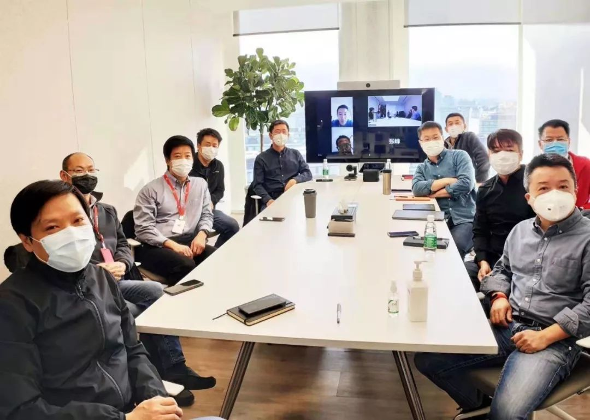

疫情之下，在家办公靠谱吗？
原文链接 备份链接 燃财经（ID:rancaijing）原创 作者 | 金玙璠 苏琦 编辑 | 魏佳 此前，国务院下发通知将春节假期延长至2月2日，今天是假期结束后的第一个工作日。为了减少人群聚集，防止交叉感染，不少互联网企业选择于2 …

疫情的影响让很多公司都选择了在线办公，但这也催生出两种工作状态。有些人的工作，因为在线办公，自己比以往更有空间了；而有些人的工作，因为在线办公，变得无事可做。
来源：《潜望》
作者：濮祥 王潘
2月3日，原本是春节假期过后返工的第一天，但是由于受到新型冠状病毒肺炎疫情影响，不少公司都选择了在线办公。
当天早上9点，由于上万企业同时开启线上办公，其中有不少企业要求开“视频晨会”，此举甚至让众多在家没有做好妆容准备的女性暴露在同事的屏幕前。当天，全国有数亿人开启在家办公模式。由于同时在线视频会议的人数超过历史最高值，远程办公软件中用户数最大的企业微信和钉钉等都曾出现过短暂「奔溃」的情况，不得不紧急扩容网络和云资源，以确保网络通畅和用户体验。
目前的中国正上演一场全球最大的在线办公试验。然而，这也是一场被动的、临阵才开始准备的实验，因此也有诸多需要解决的问题。诸如如何确保工作有序高效，如何完成KPI考核，如何平衡工作与生活，线下属性强的岗位如何操作等，都是每个企业的管理者需要面临的问题。
我们采访了多家在线办公企业的内部员工，试图呈现出不同领域、不同岗位的在线办公样本。有些人的工作，因为在线办公，自己比以往更有空间了；而有些人的工作，因为在线办公，变得无事可做。

《在家远程办公指南》
终于在小米成为“指南”
2月3日一早，雷军驱车来到位于北京海淀区的小米科技产业园，准备小米的开工仪式。
不过，相比以往小米员工到他的办公室哄抢红包，今年小米园区冷清了许多。仅有雷军、王川、刘德、王翔、卢伟冰等近十位高管来到总部现场开会，国际部总裁周受资、集团副总裁张峰等人都通过视频电话形式接入。

小米内部通知要求，2月3日至7日员工实行远程办公，2月10日恢复到岗办公，除必要返回工区工作的岗位，请尽量远程办公。也就是说，今天前往小米总部开工的仅有小米高管，以及负责人力、后勤保障的员工。
刘梵在小米某款智能产品团队工作，负责项目外部商务合作。早在一个多月前就买好了1月底从南方老家回北京上班的机票，然而由于疫情的发展，他不得不取消了航班。
春节刚过去两天，小米HRBP就开始在公司通知，春节没有带电脑回家的员工可以在内部申请借用物资，以便在家办公使用。在审核通过以后，集团行政部将为急需笔记本临时办公的同学提供备用笔记本邮寄服务。不过，刘梵自己老家有电脑可用，也就没有申请。
之前在小米内部，刘润在得到App上发布的《在家远程办公指南》广为流传，据说这是雷军亲自推荐小米员工去读的，以便让员工在家工作也能保持战斗力。
刘润在文章中建议，远程办公应该加强定期沟通，比如早会制度和晚报告制度。只有早上保证大家都在同一时间上班，是能够协作的基础；而晚上对当天工作的结果进行汇报，才能保证执行。
刘润还建议，一定要把工作区和休息区分开，还要清晰地区分好工作与休息时间，这样远程工作才能既保证高效，又能劳逸结合。
刘梵告诉腾讯新闻《潜望》，小米内部采纳了不少刘润的建议，各个部门对于远程办公都提出了明确要求。刘梵所在的部门，需要每天早上10点在企业协作软件上召开视频会议，每个人都需要对自己当天的工作计划进行汇报。而到了晚上7点，每个人又需要填写表格，对于自己当天的工作进展进行汇报。
刘梵在春节放假期间，每天都睡到自然醒。但是随着远程办公的开启，他的起床时间也必须做出调整。前几天可以睡到11点半以后起来吃第一顿饭，但因为3号开始远程办公，全家都因为他改变了作息和吃饭时间，妻子9点前就起来做了早餐，以前一天两餐也需要被改成三餐。
然而，到了上班这天，刘梵一开始还是没有将工作和生活分开，面临被打扰的问题，因为家中既有老人又有小孩，所有人围在客厅里的一个火炉边坐着，很难集中精力工作。他刚拿出电脑准备开始工作，7岁的女儿就说想要玩速算24小游戏，好不容易晓之以情动之以理说服对方，3岁的小儿子又不依不饶喊着要看“挖挖机”（即挖掘机），不答应就在地上打滚。
刘梵没有办法，只好跑到卧室把门关上才能工作。但是又遇到一个新的问题，南方很多郊区的住户冬天紧靠火炉取暖，卧室并没有安装空调，他只好裹上一层厚厚的毛毯在卧室蜷缩着与合作伙伴沟通。

一个8000多名同事的沟通群
赵云是奇安信一位负责安全项目的员工，原本计划春节期间带老婆孩子去南方游玩几天，但一切安排都被疫情打乱了，他不得不宅在北京的家里度过春节。
赵云原本以为到正月初七，就可以正常回到公司上班。然而，自1月28日（正月初四）起，他就开始了线上工作。还有一些人比他更早，那就是奇安信公司的管理层，自1月25日紧急成立新型冠状病毒感染的肺炎疫情防控支援团后，就一直采用在线办公。
1月27日（正月初三），奇安信内部员工接到高管通知，公司须紧急发货给建设中的武汉火神山医院，以确保火神山医院按期完成建设。第二天一早，赵云也开始了自己的工作，武汉火神山医院前方有众多负责技术的同事彻夜奋战，他在后方负责后勤保障和外部需求对接。但他并不是一个人，因为公司各个部门的人都以不同的形式参与了这件事。
到2月3日，公司全员正式开始远程工作。当天，奇安信董事长齐向东让同事在蓝信App上拉了一个8000多同事都在的工作群，在线上举行了一场特殊的新年开工仪式。
赵云告诉腾讯新闻《潜望》，当天早上9点半，自己很有仪式感地穿起了一套正装，在客厅的沙发上打开笔记本电脑，准备开始进入工作状态，但一旁的小孩总是前来捣乱，时不时胡乱按几下键盘。他只好拿起电脑往书房里跑，将自己关在室内，才换来一些安宁。
早上10点，奇安信分布在全国的8000多名职工一起上线开启远程办公，共同点亮奇安信战“疫”地图，用这种特殊签到开工的方式，宣誓共同抗“疫”。不过，由于当下形势仍然严峻，齐向东也就没有像年会或除夕那样给大家发开工红包。
赵云所做的功能很多可以直接通过线上完成，比如与外部机构的沟通。2月3日上午，他所在的部门小群里召开了一个线上会议，他的工作任务之一就是完成与一些机构的沟通。晚上6点半，部门再次开会，各自汇报自己的工作进展。
在奇安信，有不少员工是纯线上的技术人员，如敲代码的程序员，他们线上办公时的考核则更为直接，比如当天敲了多少代码，进展如何，领导看了一目了然。
不过，也有很多线下强需求的岗位，仅依靠线上办公就很难完成。比如此次发往武汉火神山医院的网络安全设备，就需要技术高手到前方完成建设，这样的工作仅通过线上根本无法完成。
线上办公面临瓶颈的还包括销售等线下强需求岗位，由于奇安信的客户往往是企业，在合作前需要大量的前期沟通，因此如果此前双方不熟悉，很难直接通过线上完成从零到一的销售。
不过，好在这样的日子不会太久。奇安信内部通知，仅在2月3-7日进行线上办公，北京总部定于2月10日到公司办公。

人工智能公司：远程办公已经习以为常
国内一家大型人工智能（AI）公司刘女士正在努力适应远程办公，2月1号从老家回北京后，听从公司安排，刘女士在家办公。实际上，从过年放假后，回到老家，基本都是远程办公状态。
该公司在发展过程中，办公室分散在北京、深圳、香港等不同城市，开电话会议成为平时的一种工作习惯。有同事不在一起，比如有一些同事在客户那边驻厂，不在公司；或者有销售拜访客户，也不在公司，通过电脑或者手机接入会议。“大家一起看PPT，或者一起看文档，都挺方便。”刘女士说。
像在海外的同事，也是通过远程系统与国内连线。“听他们一会讲日语，一会讲英语，急了用中文嚷嚷。”
考虑到北京平日里拥挤的交通，公司同事已默认不一定非得把所有人都召集起来开会，“你想开会的时候，随时抄起电话就开会了。”
在家远程办公，可以节省上班路上时间。偶尔有些担心，同事之间感情，面对面可能更直接、更方便。但是好像也没什么特殊事情必须要大家当面。
刘女士有一个8岁半孩子，居家办公司，与孩子在一起相处时间更多了，不像之前更多是周末才能在一起。“有利的一点是让孩子看到我的工作状态，我是怎么工作的？比如说我是很专注工作，起一个示范作用，让孩子知道要集中注意力去做一件事。不利的一点，因为他是小孩，毕竟控制不住自己，偶尔也会跑过来打扰你一下，哭啊、闹啊，这个也很正常。其实你在公司，难免会遇到各种各样事情来打扰你。与之相比的话，小孩打扰时间算相对比较可控。”
居家办公不利之处，“我觉得还是不利于整体团队合作，因为同事之间还是需要见面沟通、加深感情，我真的这么觉得。有的时候，倒不一定说我非得给你打个电话聊，才能聊出一些灵感。有的时候同事之间闲聊，无疑之中能够碰撞出来一些灵感，尤其是像广告、传播比较创意性的行业。”刘女士说。
不过，刘女士注意到，公司大型的数据中心，“也是电脑，可以远程访问。公司里留几个IT同事把公司电脑开起来，其他人远程访问。”
疫情发生之后，公司参与了政府的一些研发项目，“前期也是相对比较远程地沟通，也不一定都是需要面对面，非得要在现场。”刘女士说。“我觉得线上开电话会议工具都能够满足需求，至于长远的影响，这个也不太好讲，因为毕竟刚开始。”
远程沟通工具中，除了日常的微信和电话，公司采用了视频会议系统。这个系统有一个摄像头和屏幕，与会者拨会议号码可以直接开电话会。如果不在公司的，提前安装APP，通过手机或电脑接入。如果要访问内网，就是用公司VPN。
突然而至的远程办公商机
作为一家远程办公产品的供应商，春节过后，小鱼易连CEO袁文辉在做的是加速生产。
《潜望》与袁文辉通过微信沟通是在晚上10点钟，在这之前，袁文辉一整天手机和电脑都连接着电源，忙着与全国各地销售团队远程沟通。因为疫情发生后，一些政府有远程统一管理，疫情防治、防控需要，包括医院在内很多企业要准备节后在家上班、远程协作，需求一下子就被激发出来了。小鱼易连“每天的商机量是平时的几十倍。”袁文辉说，“从年三十到现在就没休息过。”
这是小鱼易连创立至今迎来的爆发式增长。袁文辉介绍，政府部门以前都是用传统视频会议，用专线等等。但是现在要做疫情防治，需要用移动端把不同的部门全部连接在一起，“这时候我们基于互联网、基于智能硬件的解决方案优势一下子展现出来了。举个简单例子，像遂宁市一个地级市，只用8个小时就搭建了一个空中医院，把112个定点发烧医院和市卫健委、疾控中心全部通过云视频方式全部连接在一起，然后就可以统一管理、统一协调。”
遂宁市医院8个小时搭建的空中医院，“因为我们方案是基于互联网的，在我们的设备插一个4G卡，一开机就行了。”
通过小鱼易连系统，四川省人民医院专家查房，不需要去到现场了，直接通过云视频远程方式。疫情时候，在隔离病房也能够起到很大作用，病人在隔离病房里面跟外界沟通全部通过云视频就可以解决。
袁文辉认为，这次疫情让大家尝试了一种全新的工作手段和方式，对有些人来说，会发现这个方式挺高效，疫情结束之后，可能还会局部采用远程办公模式。对于那些从来没有尝试过远程办公的，这一次大家就会体验到云视频价值和意义，疫情过去之后，肯定绝大多数人还会回到正常办公室里面办公。但是正是因为有了这次体验，对于在家办公、远程办公，未来采用这个技术、产品和服务可能性就更高了。
“对于我们公司来说，疫情之前我们已经是这种状态，公司所有员工分布在全国30多个城市，本来就只能通过云视频远程工作，在家工作、在火车上工作、在酒店工作，这对我们来说就是一个常态。”
袁文辉从一个远程办公的早期推动者角度审视未来远程办公可能性，得出的结论是相对保守。“你想想在北上广深，大家平均家里头有多大工作面积？有自己独立书房吗？当你的孩子在家时候，你能够在那儿真正工作吗？有一张自己书桌都不是那么容易，一平米要十多万元。”
他认为，除了工作环境，在家工作是一件挺有挑战的事情，要有足够自律。实际上，在家办公在美国是一个常态东西，美国有3000多万人在家办公，一个星期在家办公四天，回公司跟同事喝咖啡、见面。
疫情之前，小鱼易连满足过一些医院的远程会诊、远程查房和远程病理分析需求，遇到疫情之后，这些需求爆发了。此前，医疗领域在小鱼易连公司业务占比比较小，主要业务来自政务、金融、教育和公司办公。
不过，袁文辉在这个领域遇到了竞争对手华为，华为通过设备和云一起打包，小鱼易连则联合腾讯云、联通沃云等一起合作。
袁文辉认为，每个企业采用云视频，都能够把原来部门效率提升。他举个一个例子，像HR层面，面试全部是云视频，降低了时间成本。
即使对一些创意性、创造性脑力工作，需要大家在一起脑力激荡的场景，袁文辉也认为可以用云视频激荡替代。“现在云视频已经到了什么阶段？跟面对面没有什么区别。我有好的想法在白板上面写，全国各地同步可见，大家都可以同时在白板上面写。我在这儿改代码，同事都可以看见的，就跟你坐在旁边没区别。”

点击图片阅读更多


点击在看，即刻变好看

原文链接 备份链接 燃财经（ID:rancaijing）原创 作者 | 金玙璠 苏琦 编辑 | 魏佳 此前，国务院下发通知将春节假期延长至2月2日，今天是假期结束后的第一个工作日。为了减少人群聚集，防止交叉感染，不少互联网企业选择于2 …
原文链接 备份链接 作者 | 安然 编辑 | 康晓 出品｜深网·腾讯小满工作室 欢迎下载腾讯新闻APP，阅读更多优质资讯 _编者按：_跨越疫情经济周期，需要中国全行业上下游携手共度难关，深网推出《共克时艰》系列报道，是为第四篇，一位教育创 …
原文链接 备份链接 摘要：她们曾为城市做出过看似微小但却关键性的贡献，值得在退休后得到来自社会的助力与尊重，她们的困境，也值得在春暖花开、疫情驱散后继续被审视与关注。 谁都绝不会想到，庚子鼠年的这个春节会是如此焦虑且悲壮。线上炽热，线下 …
原文链接 备份链接 图片来源：视觉中国 记者：肖芳 伍洋宇 周伊雪 编辑：文姝琪 “ 大量的创业公司都面临着现金流的压力，维持6个月以上的现金流被认为是企业能够熬过去的关键。 ” 2020年的春节，疫情突如其来，让创业者们猝不及防。 1 …
原文链接 备份链接 ——《疫期特别篇》：疫期的形式主义与基层减负—— 我想我是开心的，因为我的《口罩下的形式主义和基层减负》受到了人民日报、半月谈、新华社的关注，随后官媒纷纷发声，痛斥个别地方官僚在疫期大搞形式主义占用基层干部本来就捉襟见 …